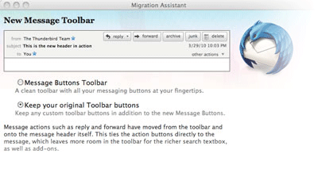
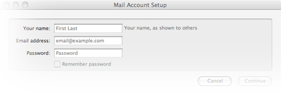
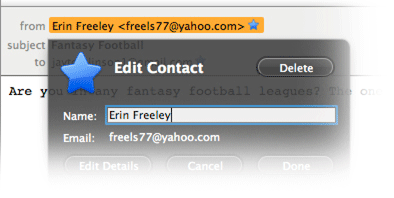
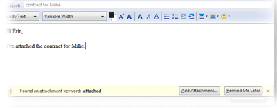
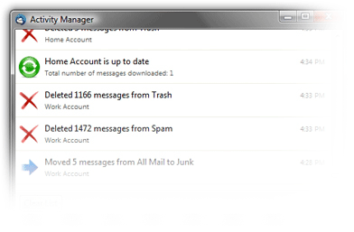

更簡單就能上手
設定全新的 Thunderbird 從來沒有那麼簡單過！
升級助手
在說明選單當中，您可以找到升級助手來幫您設定 Thunderbird 成您想要的樣子。若您喜歡原本 Thunderbird 2 的工具列，您可以快速地在升級助手當中修改這個選項。您也可以於升級助手當中安裝像是 Advanced Folder Columns 或 Compact Header 的附加元件，調整您的訊息視窗。


郵件帳號設定精靈
以往您需要您郵件帳號的 IMAP、SMTP，以及 SSL/TLS 設定值。您現在只需要輸入姓名、電子郵件地址，以及密碼。設定精靈將會自動從我們的資料庫當中幫您尋找設定值。
快捷通訊錄
快捷通訊錄是個讓您可以快速將聯絡人加到通訊錄當中的方式。只要點一下您所收到的訊息前面的星星圖示就能將其加入您的通訊錄中，點第二下就能新增聯絡人的照片、生日，或其他詳細資料。


附件提示
當您在信件內文當中提到附件或其他關鍵字卻沒有新增附件時，附件提示功能會提醒您記得要加上附件再寄出。
活動管理員
活動管理員會集中記錄 Thunderbird 與您的郵件服務提供者之間所有的互動，方便您檢視之前做過哪些操作。
